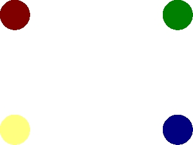
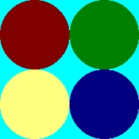
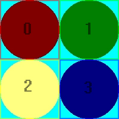

精灵图是一系列保存在同一个图像文件中的图像。当你有数量庞大的图像，但不想处理那么多的图像文件时，精灵图就派上用场了。译者注：关于Sprite和Sprite
Sheet这两个词的翻译，我不是很确定。Sprite应该是子图、子图形、子画面的意思，那么Sprite
Sheet难道要翻译为“子图表”？好像没这个说法，一般称“精灵图”的比较多，读起来比较顺口，虽然意思上好像与“精灵”一点关系也没有。在此姑且分别
翻译为“子图”和“精灵图”吧。
在blit时，为了获得单独的图像，你必须能够剪切出你需要的那部分。现在，在本节课中，我们有一张包含了4个不同的圆点子图的精灵图。本节教程将介绍如何从精灵图中剪切出一个子图。//表面 SDL_Surface *dots = NULL; SDL_Surface *screen = NULL; //事件结构体 SDL_Event event; //精灵图中将要blit的部分 SDL_Rect clip[ 4 ];
这里我们有一些全局变量。其中包括了和以前一样的窗口表面和事件结构体。我们还有一个“点”表面，它是一个包含了所有“点”子图的精灵图。
另外，还有一个包含4个SDL_Rects的数组。它们分别保存了4个“点”子图的坐标和大小。
另外，还有一个包含4个SDL_Rects的数组。它们分别保存了4个“点”子图的坐标和大小。
void apply_surface( int x, int y, SDL_Surface* source, SDL_Surface* destination, SDL_Rect* clip = NULL )
{
//用于保存坐标
SDL_Rect offset;
//获得坐标
offset.x = x;
offset.y = y;
//Blit操作
SDL_BlitSurface( source, clip, destination, &offset );
}
这是来自前面教程的表面blit函数，但做了一些调整。
其中，新的参数是一个叫做“剪切”的
我们还给它设置了默认值NULL，这意味着
与
做了完全相同的事情。
我们也改变了调用
现在，
其中，新的参数是一个叫做“剪切”的
SDL_Rect结构体，它定义了表面中需要blit的矩形区域。我们还给它设置了默认值NULL，这意味着
apply_surface( 0, 0, image, screen, NULL );
与
apply_surface( 0, 0, image, screen );
做了完全相同的事情。
我们也改变了调用
SDL_BlitSurface()的方式。我们不再仅仅去将第二个参数设为NULL，现在我们将clip参数传了进去。现在，
SDL_BlitSurface()能够blit源表面中由“剪切”结构体所定义的区域了。如果“剪切”结构体是NULL，这个函数会blit整个源表面。 //左上角的剪切区域
clip[ 0 ].x = 0;
clip[ 0 ].y = 0;
clip[ 0 ].w = 100;
clip[ 0 ].h = 100;
//右上角的剪切区域
clip[ 1 ].x = 100;
clip[ 1 ].y = 0;
clip[ 1 ].w = 100;
clip[ 1 ].h = 100;
//左下角的剪切区域
clip[ 2 ].x = 0;
clip[ 2 ].y = 100;
clip[ 2 ].w = 100;
clip[ 2 ].h = 100;
//右下角的剪切区域
clip[ 3 ].x = 100;
clip[ 3 ].y = 100;
clip[ 3 ].w = 100;
clip[ 3 ].h = 100;
在主函数中，当初始化完成并加载好文件时，我们设置了“剪切”矩形。
我们将使用这一张精灵图：
并为指定区域设置剪切矩形：
现在，我们已经准备好blit精灵图中单独的子图了。
我们将使用这一张精灵图：

并为指定区域设置剪切矩形：

就像这样。现在，我们已经准备好blit精灵图中单独的子图了。
//用白色填充窗口
SDL_FillRect( screen, screen->clip_rect, SDL_MapRGB( screen->format, 0xFF, 0xFF, 0xFF ) );
现在我们使用
这里我们传入的第二个参数是表面的
SDL_FillRect()函数将窗口填充成白色。这个函数的作用是在第一个参数定义的表面上，并在第二个参数定义的区域内，使用第三个参数定义的颜色进行填充操作。这里我们传入的第二个参数是表面的
clip_rect ，这实际上是这个表面的整个区域。
//将图像应用到窗口中
apply_surface( 0, 0, dots, screen, &clip[ 0 ] );
apply_surface( 540, 0, dots, screen, &clip[ 1 ] );
apply_surface( 0, 380, dots, screen, &clip[ 2 ] );
apply_surface( 540, 380, dots, screen, &clip[ 3 ] );
//更新窗口
if( SDL_Flip( screen ) == -1 )
{
return 1;
}
现在我们是真正地blit子图了。注意一点，每次我们都blit了同一个表面，但是不同之处在于我们每次blit了表面中的不同子图。
最终结果应该看上去像这样：
现在，当你想要使用很多图片时，你不必保存成千上万个图片文件。你可以将一个子图集合放入一个单独的图片文件中，并blit你想要使用的部分。
最终结果应该看上去像这样：
现在，当你想要使用很多图片时，你不必保存成千上万个图片文件。你可以将一个子图集合放入一个单独的图片文件中，并blit你想要使用的部分。